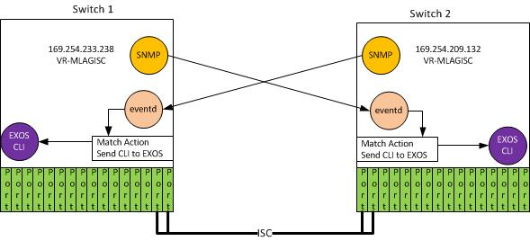

eventd.py ExtremeXOS SNMP Event Monitor¶
Disclaimer¶
This script is provided free of charge by Extreme. We hope such scripts are helpful when used in conjunction with Extreme products and technology; however, scripts are provided simply as an accommodation and are not supported nor maintained by Extreme. ANY SCRIPTS PROVIDED BY EXTREME ARE HEREBY PROVIDED “AS IS”, WITHOUT WARRANTY OF ANY KIND, EXPRESS OR IMPLIED, INCLUDING BUT NOT LIMITED TO THE WARRANTIES OF MERCHANTABILITY, FITNESS FOR A PARTICULAR PURPOSE AND NONINFRINGEMENT. IN NO EVENT SHALL EXTREME OR ITS THIRD PARTY LICENSORS BE LIABLE FOR ANY CLAIM, DAMAGES OR OTHER LIABILITY, WHETHER IN AN ACTION OF CONTRACT, TORT OR OTHERWISE, ARISING FROM, OUT OF OR IN CONNECTION WITH THE USE OR DISTRIBUTION OF SUCH SCRIPTS.
Minimum ExtremeXOS Required¶
15.7.1
Files¶
| File | Description |
|---|---|
| eventd.py | the Python module |
| eventd.cfg | the configuration file |
Introduction¶
eventd.py is a Python application, which may be installed on an EXOS switch, which monitors SNMP notifications (traps) sent from other systems. When a trap is received, the trap is compared to entries in a configuration file. If a match is found, EXOS CLI command(s) are performed.
eventd.py can receive SNMP notifications from any number of remote systems allowing for a user to create custom behavior depending on the source of the SNMP notification.
eventd.py can be configured to monitor and react to local SNMP notifications as well by using the loopback address 127.0.0.1.
In the figure below, there are three switches. The top two switches, Switch A 10.10.10.1 and Switch B 10.10.1.02, send SNMP notifications to Switch C 10.10.10.3.
Switch 10.10.10.3 can take local action depending on the SNMP notification information sent from the other switches.

For example, Switch C could take some action if Switch A had a link go down.
Getting Started¶
The eventd.cfg file must be configured with the local switches IP address that is monitored for incoming SNMP traps. Additionally, the action(s) taken on the local switch when it receives an SNMP trap from another system need to be configured as well.
%configuration Section¶
- The configuration file, eventd.cfg, must be set up with the local system IP address and optionally the local system virtual router::
- %configuration -i <ipaddress> [-v <virtual_router> [-d]
-
-i<ipaddress>,--ip_address<ipaddress>¶ the IP address to monitor for incomming SNMP trap notifications
-
-v<virtual_router>,--virtual_router<virtual_router>¶ the, optional, virtual router for the <ipaddress>
-
-d,--debug¶ Enable debug. This parameter should not be used in a production environment
Examples:
-i 169.254.209.132 -v VR-Mgmt
-i 169.254.209.132 -v VR-Default
-i 10.10.10.3 -v VR-Mgmt -d
%map Section¶
The %map section translates SNMP OIDs into easy to use names for the %action section (described below).
To get started, some OID.s have already been mapped to names. Any OID received from an SNMP notification may be mapped to a name. Once the OID to name mapping is in place, the name may be used in the %action section as a matching field.
Examples:
1.3.6.1.6.3.1.1.5.1=coldStart
1.3.6.1.6.3.1.1.5.2=warmStart
1.3.6.1.6.3.1.1.5.3=linkDown
1.3.6.1.6.3.1.1.5.4=linkUp
1.3.6.1.6.3.1.1.5.5=authenticationFailure
%action Section¶
The %action section is used to define entries that match incoming SNMP notifications and the resulting EXOS CLI action to take. Any name defined in the %map section can be used to qualify the entry.
Once all of the fields have matched the incoming SNMP notification, the cmd list is given to EXOS
Example:
fromIP=169.254.233.238, linkUp, ifIndex=1001, cmd='disable port 2'
In this example, when an SNMP notification is received:
- did it come from IP address 169.254.233.238
- is it a linkup notification
- is it from ifIndex 1001
If all of these are true, the cmd ‘disable port 2’ is given to EXOS.
Loading the Files¶
To load the files onto a switch, put eventd.py and customized eventd.cfg on a tftp server.
- Example:
For this example we will use 10.12.12.1 as the IP address of the tftp server. We will also use 10.10.10.3 as the management IP address for the switch
To transfer the files to the switch, at the EXOS CLI enter:
tftp 10.12.12.1 -g -r eventd.py tftp 10.12.12.1 -g -r eventd.cfg
To start the eventd process, at the EXOS CLI enter:
create process eventd python-module eventd start auto
The switch is now ready to receive SNMP notifications and take the actions you.ve defined in the eventd.cfg file.
You only need to perform this operation once. eventd will be restarted if EXOS reboots.
Updating eventd.cfg¶
If you would like to update the information in eventd.cfg, it will be necessary to restart eventd after the new eventd.cfg is loaded on the switch:
Example:
tftp 10.12.12.1 -g -r eventd.cfg
restart process eventd
Configuring SNMP trap receivers¶
For any EXOS switch that should forward SNMP notifications (traps) to eventd, you will configure the SNMP agent on that switch.
- Example:
In this example we configure Switch A (10.10.10.1), and Switch B (10.10.10.2) to send SNMP traps to 10.10.10.3
On switch A:
configure snmp add trapreceiver 10.10.10.3 community public
- On switch B::
- configure snmp add trapreceiver 10.10.10.3 community public
Switch A and B are now sending SNMP notifications (traps) to eventd on 10.10.10.3.
Example: eventd with MLAG¶
This section illustrates how eventd can be used with MLAG to have two switch react to events on the other switch.
Throughout this example, we will use the following configuration information for an existing MLAG 2 switch configuration.
Below is the output from show mlag peer:
**************************************************************************
* Switch 1 *
**************************************************************************
Multi-switch Link Aggregation Peers:
MLAG Peer : m00049697D184
VLAN : isc_mlag Virtual Router : VR-MLAGISC
Local IP Address : 169.254.233.238 Peer IP Address : 169.254.209.132
MLAG ports : 3 Tx-Interval : 1000 ms
Checkpoint Status : Up Peer Tx-Interval : 1000 ms
Rx-Hellos : 98380 Tx-Hellos : 98748
Rx-Checkpoint Msgs: 4867 Tx-Checkpoint Msgs: 4872
Rx-Hello Errors : 0 Tx-Hello Errors : 0
Hello Timeouts : 2 Checkpoint Errors : 0
Up Time : 1d:2h:8m:14s Peer Conn.Failures: 2
Local MAC : 00:04:96:97:e9:ee Peer MAC : 00:04:96:97:d1:84
Config'd LACP MAC : None Current LACP MAC : 00:04:96:97:e9:ee
Authentication : None
Alternate path information: None
**************************************************************************
* Switch 2 *
**************************************************************************
Multi-switch Link Aggregation Peers:
MLAG Peer : m00049697E9EE
VLAN : isc_mlag Virtual Router : VR-MLAGISC
Local IP Address : 169.254.209.132 Peer IP Address : 169.254.233.238
MLAG ports : 3 Tx-Interval : 1000 ms
Checkpoint Status : Up Peer Tx-Interval : 1000 ms
Rx-Hellos : 96018 Tx-Hellos : 96513
Rx-Checkpoint Msgs: 4715 Tx-Checkpoint Msgs: 4713
Rx-Hello Errors : 0 Tx-Hello Errors : 0
Hello Timeouts : 0 Checkpoint Errors : 0
Up Time : 1d:2h:8m:14s Peer Conn.Failures: 0
Local MAC : 00:04:96:97:d1:84 Peer MAC : 00:04:96:97:e9:ee
Config'd LACP MAC : None Current LACP MAC : 00:04:96:97:e9:ee
Authentication : None
Alternate path information: None
On Switch 1:
Edit the eventd.cfg file:
%configuration
-i 169.254.233.238 -v VR-MLAGISC
Transfer the file to the switch:
tftp <tftpserver> -g -r eventd.cfg
Start eventd:
create process eventd python-module eventd start auto
Tell SNMP to send traps to the other switch: configure snmp add trapreceiver 169.254.209.132 community public
On Switch 2:
Edit the eventd.cfg file:
%configuration
-i 169.254.209.132 -v VR-MLAGISC
Transfer the file to the switch:
tftp <tftpserver> -g -r eventd.cfg
Start eventd:
create process eventd python-module eventd start auto
Tell SNMP to send traps to the other switch:
configure snmp add trapreceiver 169.254.233.238 community public